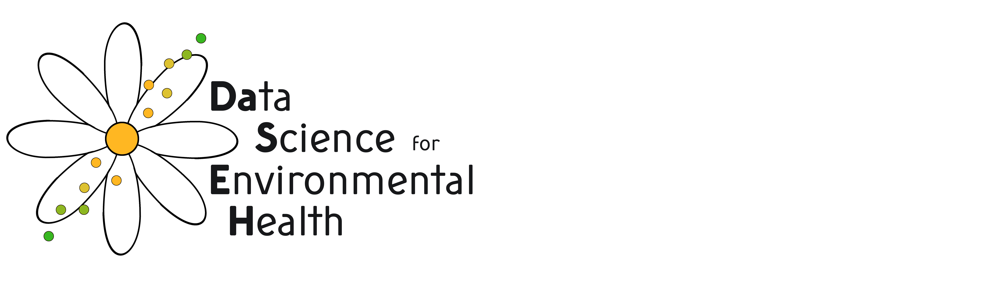

Welcome!
Data Science for Environmental Health (DaSEH) is a short course that combines online learning and an in-person project-focused intensive. DaSEH is tailored for beginners and novices in R programming, offering instruction on importing, wrangling, visualizing, and analyzing data. It provides hands-on training in using R for statistical computing, a widely-used open-source tool for data analysis and visualization.
Two-week course
DaSEH begins with a two-week online course that solidifies R programming foundations. Participants learn best practices and ingrain programming skills via active hands-on lab activities. We will practice new skills one topic at a time to make the content more manageable!
Code-a-thon
The two-week foundation prepares participants a three-day in-person intensive “Code-a-thon”. Here, we’ll work on authentic environmental health projects. We’ll also practice data ethics skills in peer code review, reproducibility, and transparency in a supportive environment.
Instructors
Carrie Wright (cwright2 @ fredhutch.org), Ava Hoffman (ahoffma2 at fredhutch.org), Elizabeth Humphries (ehumphri at fredhutch.org)
The lead instructors have earned recognition for excellence in teaching and have trained hundreds of professional learners. We can’t wait to have you in class, too!
We’re also supported by our data scientist, Candace Savonen (csavonen at fredhutch.org).
Sign Up!
Please apply using this form.
Our next session(s) of DaSEH will be:
- Session 1 : July 8-18 (online/virtual course) + July 29-31 (in person in Seattle)
- Session 2 : September 30 - October 10 (online/virtual course) + October 23-25 (in person in Seattle)
Testimonials from our other courses:
“Thanks all for a wonderful course! I feel super confident in R now and I am excited to apply what we learned to future projects. Cheers !!”
“I feel like a data witch now! I just say poof and the data looks the way I want”
“OK - this is getting to be too much fun now”
“My 14 year old thinks this class looks cool and wants to take it (she’s a wanna be engineer)”
Find an Error!?
Feel free to submit typos/errors/etc via the GitHub repository associated with the class: https://github.com/fhdsl/DaSEH
This page was last updated on 2024-04-12.

This work is licensed under a
Creative
Commons Attribution-NonCommercial-ShareAlike 4.0 International
License.